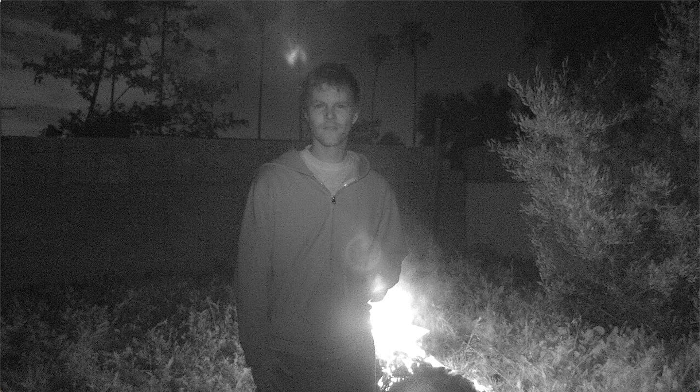

Chanel Beads is an experimental music project led by Shane Lavers, known for its dreamy, atmospheric sound that blends experimental pop, ambient textures, and distorted electronics. Their music combines haunting vocals, unconventional instrumentation, and melancholic melodies to create a surreal, intimate listening experience.
Back to list